Ejemplo Optimizadores¶
import numpy as np
import matplotlib.pyplot as plt
from sklearn.datasets import make_moons
X, y = make_moons(n_samples=1000, noise=0.07, random_state=0)
plt.scatter(X[:, 0], X[:, 1], c=y)
plt.xlabel("X1")
plt.ylabel("X2");

Conjunto de train y test:¶
from sklearn.model_selection import train_test_split
X_train, X_test, y_train, y_test = train_test_split(X, y, test_size=0.2, random_state=0)
Estandarización de las variables:¶
from sklearn.preprocessing import StandardScaler
sc = StandardScaler()
sc.fit(X_train)
X_train = sc.transform(X_train)
X_test = sc.transform(X_test)
Ajuste red neuronal:¶
Ajuste inicial:
from keras.models import Sequential
from keras.layers import Dense
model = Sequential()
model.add(Dense(30, activation = "relu", input_shape=(X.shape[1],)))
model.add(Dense(1, activation = "sigmoid"))
model.compile(loss='binary_crossentropy', optimizer="sgd", metrics=['accuracy'])
history = model.fit(X_train, y_train, validation_data=(X_test, y_test),
epochs=200,
batch_size=5,
verbose=0)
from matplotlib.colors import ListedColormap
X_Set, y_Set = X_test, y_test
X1, X2 = np.meshgrid(
np.arange(start=X_Set[:, 0].min() - 1, stop=X_Set[:, 0].max() + 1, step=0.01),
np.arange(start=X_Set[:, 1].min() - 1, stop=X_Set[:, 1].max() + 1, step=0.01),
)
plt.contourf(
X1,
X2,
model.predict(np.array([X1.ravel(), X2.ravel()]).T).reshape(X1.shape),
alpha=0.75,
cmap=ListedColormap(("skyblue", "#F3B3A9")),
)
plt.xlim(X1.min(), X1.max())
plt.ylim(X2.min(), X2.max())
for i, j in enumerate(np.unique(y_Set)):
plt.scatter(
X_Set[y_Set == j, 0],
X_Set[y_Set == j, 1],
c=ListedColormap(("#195E7A", "#BA1818"))(i),
label=j,
)
plt.title("RNA")
plt.xlabel("X1")
plt.ylabel("X2")
plt.legend()
plt.show()
9954/9954 [==============================] - 6s 629us/step
c argument looks like a single numeric RGB or RGBA sequence, which should be avoided as value-mapping will have precedence in case its length matches with x & y. Please use the color keyword-argument or provide a 2D array with a single row if you intend to specify the same RGB or RGBA value for all points. c argument looks like a single numeric RGB or RGBA sequence, which should be avoided as value-mapping will have precedence in case its length matches with x & y. Please use the color keyword-argument or provide a 2D array with a single row if you intend to specify the same RGB or RGBA value for all points.
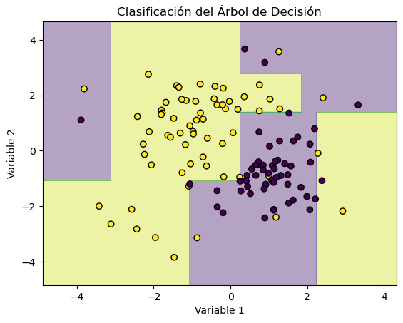
Optimizadores:¶
import keras
def fit_model(X_train, y_train, X_test, y_test, optimizer):
model = Sequential()
model.add(Dense(30, activation = "relu", input_shape=(X.shape[1],)))
model.add(Dense(1, activation = "sigmoid"))
model.compile(loss='binary_crossentropy', optimizer=optimizer, metrics=['accuracy'])
history = model.fit(X_train, y_train, validation_data=(X_test, y_test),
epochs=200,
batch_size=5,
verbose=0)
plt.plot(history.history['loss'])
plt.plot(history.history['val_loss'])
plt.title('optimizer: '+optimizer)
plt.show()
plt.plot(history.history['accuracy'])
plt.plot(history.history['val_accuracy'])
plt.title('optimizer: '+optimizer)
plt.show()
optimizers = ['sgd', 'rmsprop', 'adagrad', 'adam']
for i in range(len(optimizers)):
fit_model(X_train, y_train, X_test, y_test, optimizers[i])
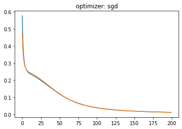

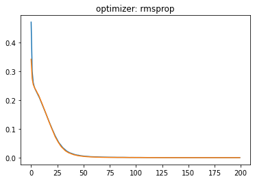
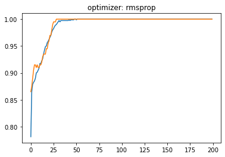
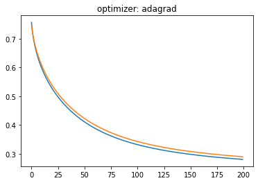
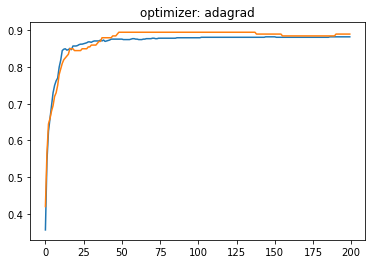
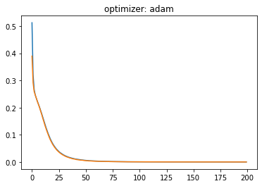
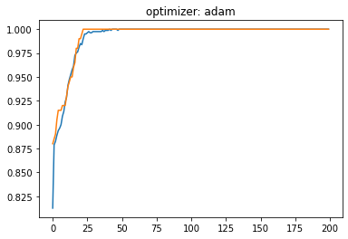
Momentum:¶
def fit_model(X_train, y_train, X_test, y_test, momentum):
model = Sequential()
model.add(Dense(30, activation = "relu", input_shape=(X.shape[1],)))
model.add(Dense(1, activation = "sigmoid"))
opt = keras.optimizers.SGD(momentum=momentum)
model.compile(loss='binary_crossentropy', optimizer=opt, metrics=['accuracy'])
history = model.fit(X_train, y_train, validation_data=(X_test, y_test),
epochs=200,
batch_size=5,
verbose=0)
plt.plot(history.history['loss'])
plt.plot(history.history['val_loss'])
plt.title('Momentum: '+str(momentum))
plt.show()
plt.plot(history.history['accuracy'])
plt.plot(history.history['val_accuracy'])
plt.title('Momentum: '+str(momentum))
plt.show()
momentums = [0.0, 0.5, 0.9, 0.99]
for i in range(len(optimizers)):
fit_model(X_train, y_train, X_test, y_test, momentums[i])
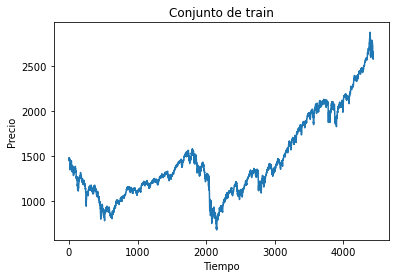
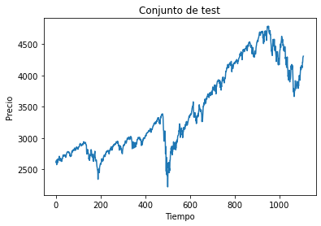
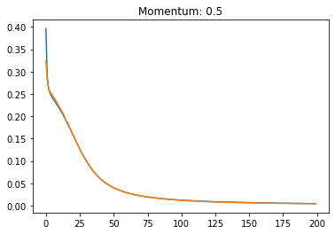
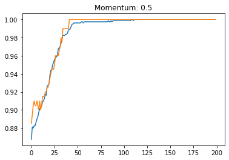
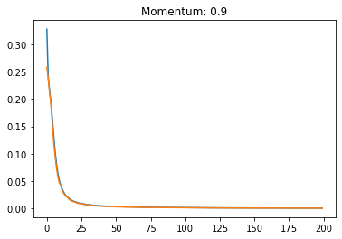
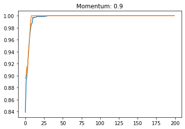
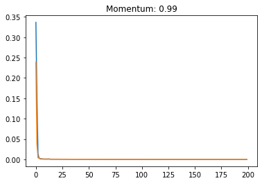
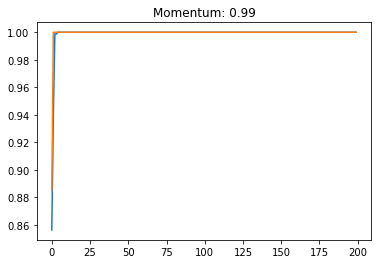